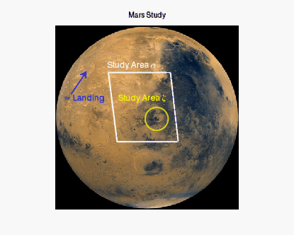

In any IDL graphics display, you can add annotations when you create the visualization or after you display it. The following kinds of annotations are available:
Circles and Ovals using ELLIPSE
Draw Multi-Sided Shapes using POLYGON
Draw Lines and Arrows using POLYLINE
Text and Symbols using TEXT
The graphic below shows examples of all these annotation types. For the detail on each type, click the links above.

The code shown below opens and displays the mars image. You can copy the entire block and paste it into the IDL command line to run it.
; Define the image to display.
file = FILEPATH('marsglobe.jpg', $
SUBDIRECTORY = ['examples', 'data'])
; Display the mars image.
mglobe = IMAGE(file, TITLE='Mars Study')
; Draw the crater study area using ELLIPSE.
crater = ELLIPSE(221, 197, TARGET=mglobe, $
/DATA, MAJOR=25, COLOR='yellow', THICK=2, $
FILL_BACKGROUND=0)
; Draw the text for the crater study area.
cratertext = TEXT(137, 235, 'Study Area $\zeta$', $
COLOR='yellow', /DATA, FONT_SIZE=12)
; Define the large study area.
coords = [[116, 298],[251, 298], $
[268, 147], [135, 147]]
; Draw the large study area using POLYGON.
alpha = polygon(coords, TARGET=mglobe, /DATA, $
FILL_BACKGROUND=0, COLOR='white', THICK=2)
; Draw the text for the large study area.
alphatext = TEXT(113, 307, TARGET=mglobe, $
'Study Area $\alpha$', $
COLOR='white', /DATA, FONT_SIZE=14)
; Draw the arrow pointing to the landing site.
landingsite = ARROW([[35, 251],[68,300]], $
TARGET=mglobe, /DATA, COLOR='blue', THICK=2)
; Draw the text for the landing site.
landtext = TEXT(19, 235, TARGET=mglobe, $
'$\approx$ Landing', $
/DATA, COLOR='blue', FONT_SIZE=14)